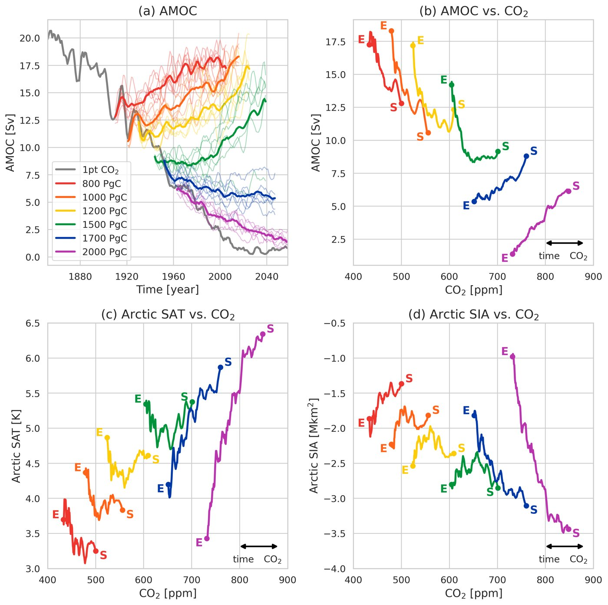
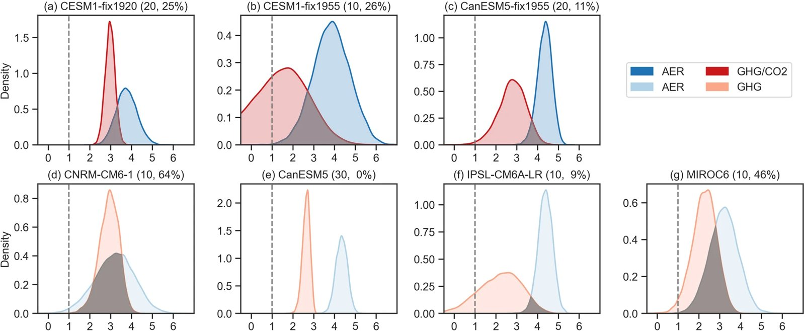
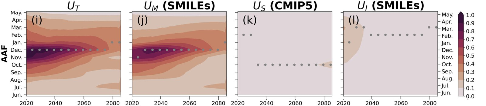

hi there!
I am currently a third-year Ph.D. student in Applied Mathematics at Columbia University, working with Professor Lorenzo Polvani and Professor Michael Previdi. I earned dual bachelor's degrees from National Taiwan University, majoring in Mechanical Engineering and Atmospheric Sciences.
I work at the intersection of applied mathematics and climate science, building quantitative frameworks to understand how the Arctic responds to forcing. My work combines large-ensemble climate model experiments, statistical analysis of multi-model data, and feedback decomposition methods. I use them to separate the drivers of Arctic amplification and to test for threshold behavior such as climate tipping points.
In my leisure, I enjoy playing guitar, and I'm a Man City fan.
education & experience
research
Arctic Climate Tipping Points (Wu et al., 2026)
Bifurcation and stochastic tipping. What happens to the Arctic once CO₂ emissions stop? Using Earth system model ensembles in which emissions are cut to zero at cumulative totals of 800–2,000 PgC, I find bifurcating behavior. Below about 1,700 PgC the Arctic keeps warming, while above it a near-collapse of the Atlantic overturning circulation (AMOC) triggers abrupt cooling and sea-ice expansion. This points to stochastic tipping into an alternative Arctic climate state.

Attributing Arctic Amplification (Wu et al., 2024)
Attribution under internal variability. I compare how strongly aerosols and greenhouse gases amplify Arctic warming, using single-forcing large ensembles from multiple climate models. Resampling ensemble members to build probability distributions lets me separate the forced signal from internal variability. Aerosols produce stronger Arctic amplification than greenhouse gases, driven by different sensitivities of sea ice, albedo and surface heat flux.

Uncertainty in Projections (Wu et al., 2023)
Decomposing uncertainty in ensemble projections. I treat climate projections as a random variable and split its variance into three sources: internal variability (estimated from initial-condition large ensembles), structural differences between models (from the CMIP5 archive), and scenario uncertainty. I track how the signal-to-noise ratio and the share of each source change with season and lead time.
